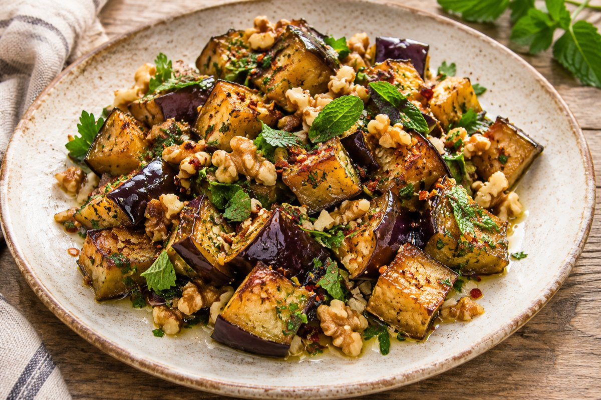

Auberginen mit Walnüssen und Kräutern

Goldbraun gebratene Auberginenwürfel mit Walnüssen, Minze, Petersilie, Zitrone und Aleppo-Chili.
Zutaten
Zutaten
- 2 große Auberginen (500 g), in ca. 2 cm große Würfel geschnitten
- 1 TL Salz (im Zubereitungstext genannt)
- Ca. 300 ml Sonnenblumenöl zum Braten
- 160 g Walnusskerne, grob gehackt
- 10 g Minzblätter, grob gehackt
- 10 g Petersilienblätter, grob gehackt
- 2 EL Zitronensaft
- 2 EL Olivenöl
- ½ TL Aleppo-Chiliflocken oder ¼ TL gewöhnliche Chiliflocken
Zubereitung
- Auberginenwürfel in ein Sieb geben und mit 1 TL Salz bestreuen. Das Sieb über eine Schüssel oder in die Spüle stellen. Die Würfel mit den Händen gründlich durchmischen und etwa 45 Minuten stehen lassen.
- Die Auberginen auf ein mit Küchenpapier ausgelegtes Blech geben und möglichst gründlich trocken tupfen.
- Sonnenblumenöl in einer mittelgroßen Pfanne bei mittlerer bis hoher Hitze erhitzen. Auberginen in zwei oder drei Portionen braten, damit die Pfanne nicht zu voll wird. Je Portion etwa 8 Minuten braten, bis sie sehr weich und goldbraun sind.
- Mit einem Schaumlöffel auf ein weiteres mit Küchenpapier ausgelegtes Blech geben und abtropfen lassen, während die nächste Portion brät. Alternativ das vorhandene Blech mit frischem Küchenpapier auslegen.
- Die gebratenen Auberginen in eine Schüssel geben. Walnüsse, Minze, Petersilie, Zitronensaft, Olivenöl und Chiliflocken hinzufügen und gründlich vermischen.
- Sofort servieren. In der Vorlage wird der Hummus auf flache Portionsschalen verteilt, eine Mulde in der Mitte geformt und mit den Auberginen gefüllt. Der Hummus ist als separates Rezept verlinkt.
Weitere Bestandteile
Quelle und Hinweise
Bereitgestellte englischsprachige Rezeptblätter „Hummus in Two Ways!“, die auf „Palästina – Das Kochbuch“ von Sami Tamimi und Tara Wigley verweisen.
Ins Deutsche übersetzt und auf Wunsch in drei eigenständige Rezepte aufgeteilt. Die Vorlage nennt 6 Personen für Hummus mit einem der Toppings; die Originalmengen wurden unverändert übernommen. Eigenständige Portionszahlen der Bestandteile sind nicht angegeben. Einweich-, Warte- und Garzeiten stehen in den Schritten; keine Gesamtzeit wurde errechnet.
Die Angabe „2 große Auberginen (500 g)“ wurde unverändert übernommen. Die Salzmenge stammt aus der Zubereitung. Das Sonnenblumenöl ist Bratöl, nicht eine zusätzlich einzurührende Zutat. Hummus ist nicht Bestandteil dieser Zutatenliste.